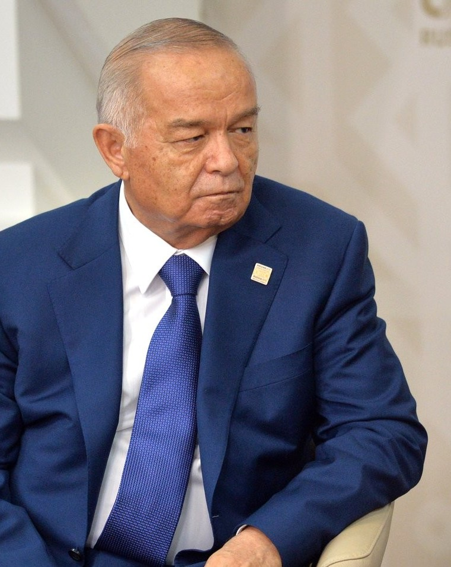

Islam Karimov: the first president of independent Uzbekistan (1938–2016)
Born in Samarkand in 1938, Islam Karimov led the state from 1991 until 2016. His biography, rule and contested events — a neutral, sourced history with dates.

Islam Karimov was the first president of independent Uzbekistan, leading the state from independence in 1991 until 2016. The following sets out his biography and rule neutrally, using only verified dates and sources. On contested events, the figures given by different sources are attributed to who reported them.
Biography
Islam Abduganievich Karimov was born on 30 January 1938 in Samarkand. He was trained as an engineer and economist — he studied mechanical engineering at a Tashkent polytechnic institute and later economics. He worked as an engineer in 1961–1966, then entered the Uzbek state planning system (Gosplan) in 1966, working in the economic field.
Rise to power
On 23 June 1989 Karimov was appointed First Secretary of the Communist Party of Uzbekistan. On 24 March 1990 the Supreme Soviet elected him president of the republic (this was not a popular vote). Uzbekistan declared independence on 31 August 1991. In the first direct presidential election on 29 December 1991, Karimov won with about 86% according to official figures; his sole rival, Muhammad Salih (Erk), received about 12%. Human Rights Watch called the vote “seriously marred”.
Years in the presidency
Karimov remained president from 1991 until 2016. His term was extended through referendums and re-elections: a 1995 referendum (officially ~99.6% “yes”), the 2000 election (~91.9%). A referendum on 27 January 2002 extended the presidential term from 5 to 7 years and introduced a bicameral parliament. He won ~88.1% in the 2007 election and ~90.4% in 2015.
International observers — including the OSCE/ODIHR — repeatedly assessed elections in Uzbekistan as not free or fair and offering no real choice (this assessment belongs to the observers). In the economy Karimov pursued a gradual, state-controlled reform — the “Uzbek model” — emphasizing self-sufficiency in grain and energy.
The Andijan events (13 May 2005)
On 13 May 2005 government forces opened fire on a large protest in Andijan. Reports of the death toll differ sharply and depend on the source: the Uzbek government stated that 187 people were killed; Human Rights Watch, Amnesty International, the OSCE and the UN human-rights office estimated the toll much higher — around 500 or more. No independent international investigation was permitted.
After Andijan the European Union imposed sanctions — an arms embargo and a visa ban on certain officials. The sanctions were later lifted in stages: the visa ban in October 2008 and the arms embargo in October 2009.
Death and succession
Karimov fell ill from a brain hemorrhage (stroke) on 27 August 2016 and was hospitalized in Tashkent. The government officially announced his death on 2 September 2016 at the age of 78 (some reports speculated he had died earlier — that speculation belongs to those sources). A state funeral was held in Samarkand on 3 September; he was buried at the Shah-i-Zinda necropolis.
Under the constitution the interim succession should have passed to the chairman of the Senate, but on 8 September 2016 Prime Minister Shavkat Mirziyoyev was appointed interim president. Mirziyoyev won the election of 4 December 2016 (~88.6%) and took office on 14 December.
Family
Karimov's wife was the economist Tatyana Karimova. He had two daughters: Gulnara Karimova and Lola Karimova-Tillyaeva. Gulnara Karimova was later prosecuted: arrested in 2015; in March 2020 the Tashkent City Court sentenced her to 13 years on charges including embezzlement, extortion and money laundering (an earlier sentence had been handed down in 2017).
A note on sources
Some figures (election percentages, the Andijan death toll) vary by source and are attributed above to who reported them. The official date of death is 2 September 2016; claims that he died earlier are unverified speculation. All dates have been checked against several authoritative sources.